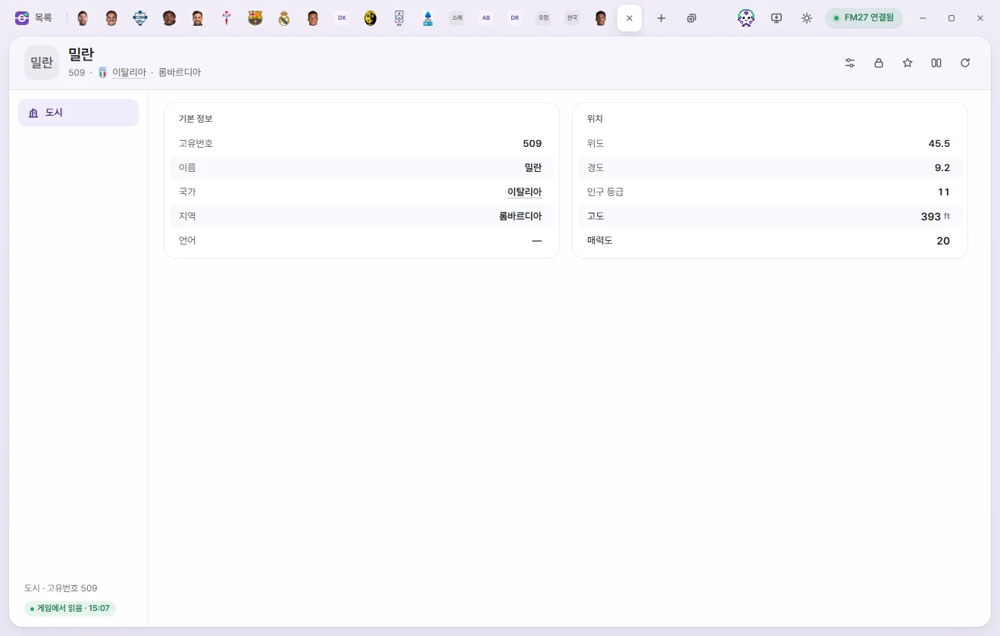
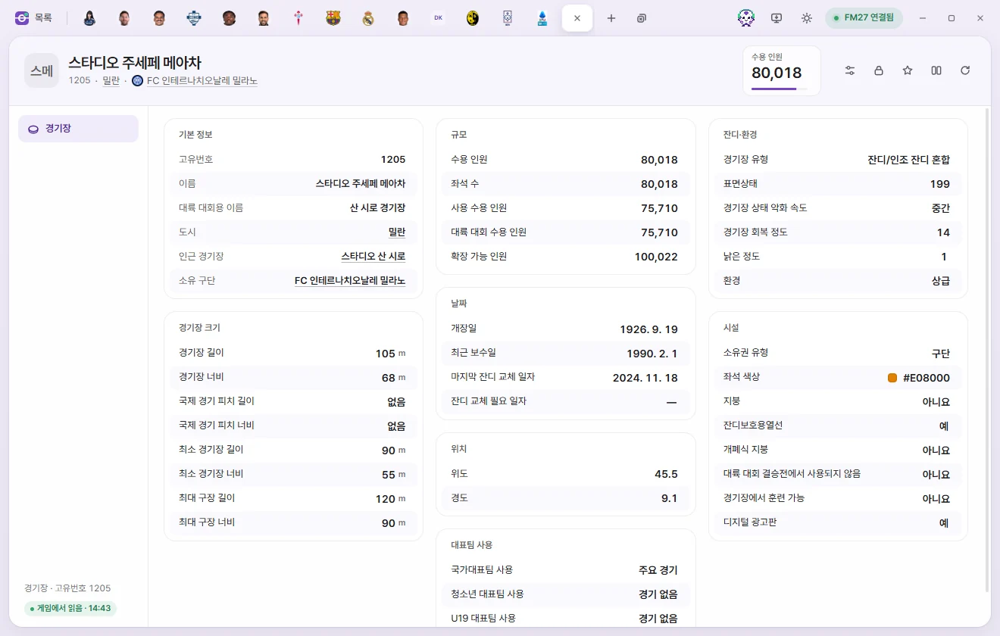

Edit tabs
City & stadium
How to edit a city's altitude and attraction, and how to edit a stadium's capacity, pitch dimensions, surface, facilities, and national team use.
The City tab and the Stadium tab each have a single page. Editing values and saving work the same way as on the Player tab. Editing values on the Player page
On both tabs, the buttons at the top right are Presets, Locks, Favourites, Compare, and Reload from game. There is no ⚡ button. Player tab header
City


How to open
Click a city's name in the Cities list, or click any underlined city name elsewhere—such as a player's City of birth, a club's City, a nation's capital, or a stadium's City.
Tab header
Below the name you'll see the Unique ID, Nation, and Region. There are no number cards.
City page
| Section | Field | Description | Editable range |
|---|---|---|---|
| Overview | Unique ID, Name, Region, Language | Read-only | |
| Overview | Nation | Click to open the Nation tab | Read-only |
| Location | Latitude, Longitude | Coordinates of the city | Read-only |
| Location | Altitude | In feet (ft) | 0–20,000 |
| Location | Population tier | Read-only | |
| Location | Attraction | 0–20 |
Stadium


How to open
Click a stadium's name in the Stadiums list, or click any underlined stadium name elsewhere—such as a club or team's Home stadium or a nation's National stadium.
Tab header
- Below the name you'll see its Unique ID, City, and Owner club.
- The number card shows Capacity (0–250,000). Click it to type a number directly.
Overview, Dates, and Location
| Field | Description | Editable range |
|---|---|---|
| Unique ID, Name, Continental competition name | Read-only | |
| City, Nearby stadium, Owner club | Click to open the corresponding tab | Read-only |
| Date opened, Last renovated, Pitch last relaid, Pitch relay due | Date | |
| Latitude | −90 to 90 | |
| Longitude | −180 to 180 |
Capacity
| Field | Editable range |
|---|---|
| Capacity, Seated capacity, Used capacity, Continental capacity, Expansion capacity | 0–250,000 |
Pitch dimensions
All values are in metres (m).
| Field | Description | Editable range |
|---|---|---|
| Pitch length, Pitch width | Playing surface dimensions | Length 90–120, width 45–90 |
| International pitch length, width | Present only on stadiums that host international matches (around 700 stadiums), mostly 105 × 68. Shows 'None' if unset | Length 90–120, width 45–90 |
| Minimum pitch length, width | Set to 90 × 55 for every stadium | Length 90–120, width 45–90 |
| Maximum pitch length, width | Length 90–120, width 45–90 |
Surface and environment
| Field | Description | Editable range |
|---|---|---|
| Pitch type | Grass, Synthetic (soft or hard), Gravel, Clay, Sand, Grass/synthetic mix, and others | Options |
| Pitch condition | 200 is the most common value and appears to represent pristine condition. The game's exact scale has not been confirmed | 0–200 |
| Pitch deterioration rate | Fast, Medium, Slow | Options |
| Pitch recovery | 0–20 | |
| Decay | 0–20 | |
| Environment | Not configured, Built-in, Standard, High end, State of the art | Options |
Facilities
| Field | Description | Editable range |
|---|---|---|
| Owner type | Club, Local council, Individual, Owner, Fans | Options |
| Seat colour | Click to open the colour picker | Colour |
| Roof, Undersoil heating, Retractable roof | Yes, No | |
| Not used in continental final | Yes, No | |
| Can train at stadium, Digital adboards | Yes, No |
National team use
| Field | Description | Editable range |
|---|---|---|
| Used by national team, Used by national youth team, Used by national U19 team | No matches, All matches, Major matches, Medium matches, Minor matches, Major matches and some medium matches, Minor matches and some medium matches | Options |
A club's 'Home stadium capacity' is read-only on the Club tab—edit the stadium's Capacity here on the Stadium tab instead.